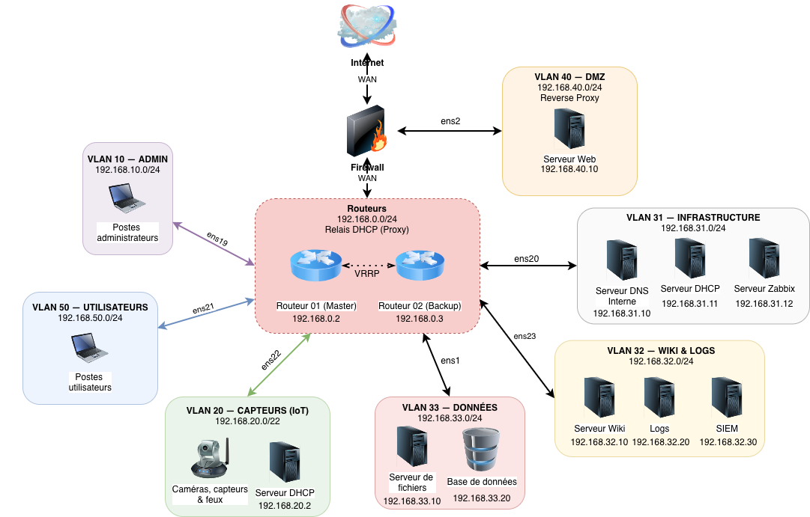
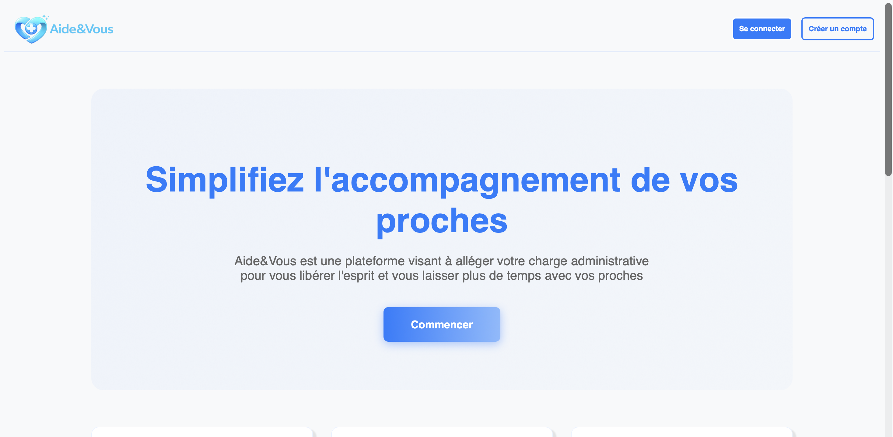
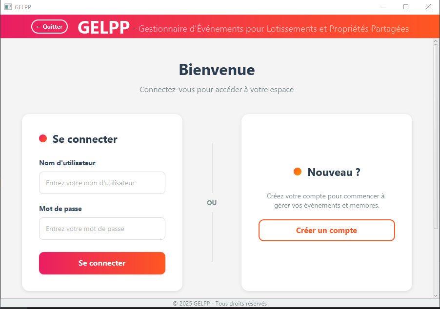

Mathis Vangi
Développeur · Administrateur Réseaux & Systèmes
Étudiant BUT2 — Recherche alternance 2026 · sysadmin / réseaux / sécurité · Grenoble
Tapez help ou cliquez une commande :
Entrée pour exécuter, flèches haut et bas pour l'historique, Tab pour compléter une commande.
À propos de moi
Découvrez mon parcours et ma passion pour la technologie
Bonjour et bienvenue ! Je suis Mathis Vangi, étudiant en informatique. Mon profil a une petite particularité : j'aime autant écrire du code que configurer des serveurs. C'est ce qui m'anime au quotidien.
Pour moi, une bonne application ne s'arrête pas à son interface. Ce qui me passionne, c'est de comprendre "l'envers du décor" : concevoir des solutions performantes, les déployer, et construire l'infrastructure sécurisée qui va les faire tourner.
Curieux de nature et touche-à-tout, j'adore "mettre les mains dans le cambouis". Que ce soit pour durcir un réseau ou optimiser un script, je suis toujours prêt à relever de nouveaux défis techniques.
Mon Parcours
Les étapes clés de ma formation et de mon évolution
BUT Informatique
IUT 2 - Univ. Grenoble Alpes
Spécialité : Déploiement d'applications communicantes et sécurisées (Parcours B)
Acquisition de compétences entre développement et administration système. Apprentissage de l'installation, la configuration et la sécurisation des services réseaux.
Stage : Développeur (PWA)
JKL Events — Mini-Golf de Crolles
Conception et sécurisation d'une application web progressive déployée en production : base PostgreSQL (RLS), back-office d'administration, gamification et déploiement (domaine, DNS, en-têtes de sécurité). En équipe de 3.
Voir le projetPrix du Meilleur Prototype (2ème)
IUT 2 - Univ. Grenoble Alpes
Médaille d'Argent pour le projet Aide&Vous. Évaluation basée sur la qualité technique (Architecture MVC), l'expérience utilisateur et l'intégration de l'OCR.
Certification PIX
Plateforme Nationale
Validation officielle des compétences numériques. Renforcement des savoirs en cybersécurité, traitement de données et culture numérique.
Baccalauréat STI2D (SIN)
Lycée Polyvalent Vaucanson - Grenoble
Spécialité : Systèmes d'Information et Numérique
Acquisition des bases solides en logique de programmation, architecture réseau et électronique embarquée.
Mes Compétences
Technologies et outils que je maîtrise
Langages de Programmation
Réseaux & Systèmes
Outils & Technologies
Mes Projets
Découvrez quelques-unes de mes réalisations

Application Mini-Golf de Crolles
Application web progressive (PWA) de gestion de scores, développée en stage chez JKL Events et déployée en production. Mon périmètre : base PostgreSQL sécurisée (RLS), back-office, gamification et mise en production (DNS, en-têtes de sécurité).

Infrastructure réseau sécurisée
Conception et déploiement d'une architecture réseau hautement disponible pour la gestion intelligente du trafic urbain. Intégration de la tolérance aux pannes (VRRP) et d'un système de surveillance complet.

Aide&Vous
Plateforme web sécurisée pour les aidants familiaux. Elle permet la centralisation des dossiers médicaux, l'analyse automatique d'ordonnances (OCR Python) et la coordination du cercle de soin.

Application GELPP
Développement d'une application Java/JavaFX pour la gestion d'événements en copropriété. Un outil simple et collaboratif pour planifier des assemblées générales, réunions et événements sociaux.

Site Web Institutionnel
Création d'un site web institutionnel pour une entreprise du secteur numérique, destiné à la génération Alpha avec un design sobre et écologique.
Contactez-moi
N'hésitez pas à me contacter pour toute question ou opportunité
Informations de contact
[cliquez pour afficher]
Grenoble, France
BUT Informatique - IUT2 UGA
Étudiant — Recherche d'alternance 2026